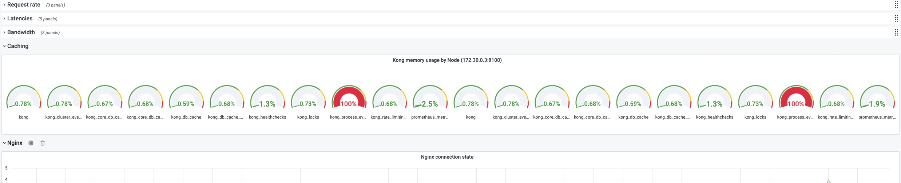
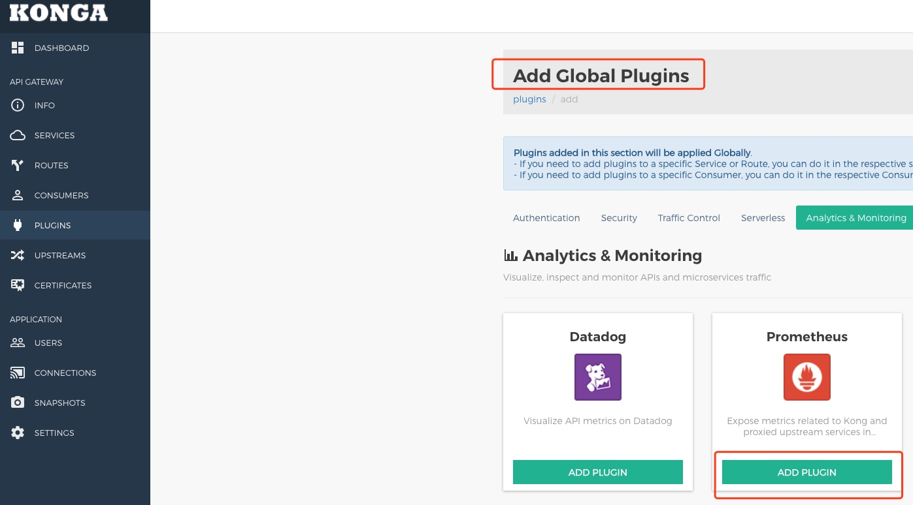
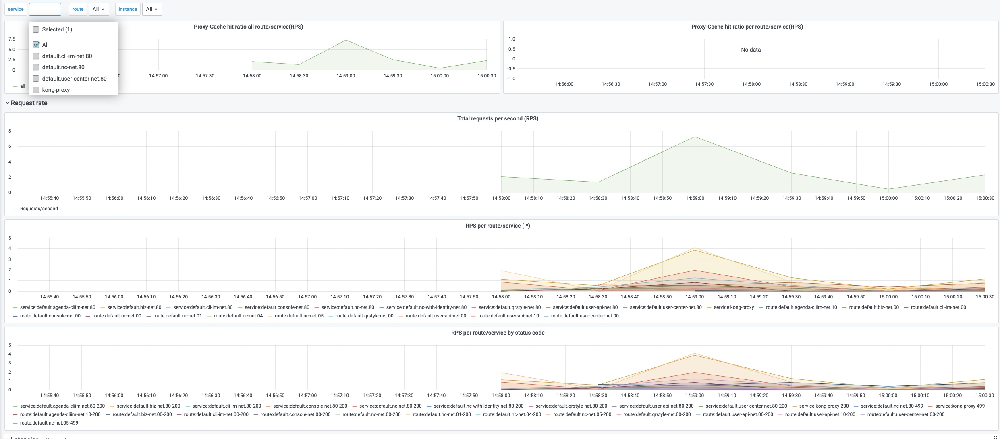

我们这里借这个监控插件（prometheus）来展示 Kong Gateway 是如何配置插件的。
关于监控采集，默认 Kong 暴露的 metrics 接口是 :8100/metrics，包括一些基本数据监控，更为细粒度的监控数据（比如 Routes，Services, HTTTP code 等）就需要监控插件：Prometheus Plugin。
另外，Kong 还有官方 Grafana dashboard 模板，只要适配好监控源，完全可以实现一键搭建监控图，详见：https://grafana.com/grafana/dashboards/7424。
准备
在谈监控前，我们首先要完善 Prometheus（这个 Prometheus 不是指插件，而是监控采集工具），我这里是直接使用阿里云的监控采集，省去了 Prometheus 的安装以及数据存储问题。
如果是自己动手部署话，就需要通过 Kong Service 地址 + 监控 Port 的形式准确采集即可。成功的话，大概会和下图一样：

只有 Kong 自身的监控数据，并不涉及请求相关的。
一般插件的适配
首先，官方提供了一定的功能插件，详见：https://docs.konghq.com/hub/，然后我们也可以在官方文档找到 “通过 K8s 自定义资源适配 Kong 各种插件的” 方式，详见：https://docs.konghq.com/kubernetes-ingress-controller/1.1.x/concepts/custom-resources/。
但是我不推荐。
不推荐的理由是，上述自定义资源，就像一个桥梁连接了插件和对应的路由（Kong Routes）和服务（Kong Services）。这些都存在 K8s 数据信息中心，但是接下来，你一旦修改插件的参数，而这个修改是不会计入到 K8s 资源中去的，等到 Kong 重启后，插件的信息就会恢复到一开始的样子。
所以我推荐通过 Admin API 操作插件。
Admin API 操作插件
通过 Konga UI，我们可以很方便的启用插件，注意插件也是分全局插件和针对性的插件，下午我们直接创建了一个全局的 Prometheus Plugin。

然后在去查看 Grafana 监控，就可以看到请求相关的监控了。

其他插件的操作
Kong 提供了很多免费的插件，几乎都可以在 konga UI 上直接操作，例如 Rate Limiting 等。但是，我发现在操作 Proxy Cache Plugin 时，konga 无法将一些参数有效地传递给 Kong，如果出现了这种情况，我们就不得不使用 Kong 自定义资源了，每次修改都需要删除老的定义，新建新的定义。
另外，我们也可以自行开发插件，同样也可以在 konga 上操作。
总结
官方推荐使用 Kong Custom Resources 的形式适配插件，但是不支持修改，所以我推荐通过 konga + Kong Admin API 的方式，既减轻了我们理解的负担，也方便具体操作。
上述不足的地方在于，konga 存在一些 bug，不能正确解析某些 Plugin 字段，那么这时候我们还是要靠 Kong Custom Resources 的形式。
免费插件有很多，我们就不一一介绍了，之后我们也会提供自定义插件的例子。